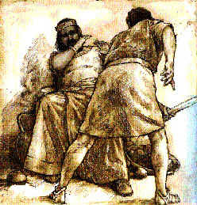
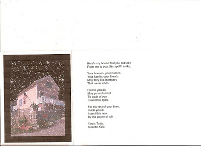

Sic semper Tyrannis: Israelite liberator Ehud slays the tyrant-king Eglon.
"... Ehud made him a dagger which had two edges, and he did gird it under his raiment upon his right thigh. And he brought [a] present unto Eglon, the king of Moab.... And Ehud put forth his left hand, and took the dagger from his right thigh, and thrust it into [Eglon's] belly...."
Judges 3:16-21, describing the assassination of Moabite tyrant Eglon by the "deliverer," Ehud the son of Gera
Even by local standards, the late Li Shiming was an uncommonly malicious "public servant." His unabashed rapacity and casual sadism eventually cost him his life. Like the ancient Moabite tyrant-king Eglon, Li was stabbed to death without warning in an unlikely setting -- a public school, in his case, rather than a summer parlor -- by a young man many of his erstwhile victims consider a heroic deliverer.
As regional commissar in the northern China town of Xiashuixi, Li confiscated land and other property at will and terrorized anybody who expressed an audible objection. Notes Jane MacCartney, Beijing correspondent for the London Times: "One villager who got into a row with him over the allocation of a contract was beaten so badly that he suffered a fractured spine. He was beaten again when he arrived at [the] hospital."
Zhang Weixing, a 58-year-old farmer, was among the scores or hundreds of people whose lands were confiscated by Li and distributed to the commissar's cronies. Zhang and his wife did what they could to defend their pitiful little plot of land; for their trouble they were beaten by a mob of hired thugs.

Tyrannicide: Zhang Xuping, seen here in Beijing, confessed to killing a regional commissar in order to end his reign of terror. Zhang, 19, now faces the death penalty.
Similar treatment was visited on another local farmer named Zhang Huping (no relation), except that in his case the hired thugs were part of the official police force.
Zhang -- whose mother was imprisoned by Li, and who was vindictively expelled from school on the commissar's orders -- was routinely assaulted and detained on fraudulent criminal charges in retaliation for his role in organizing farmers whose orchards were seized and destroyed in 2003.
"Li lorded it over Xiashuixi, an arid mining region where farmers struggle to find water to grow vegetables to sustain themselves or corn to feed their pigs," recounts MacCartney. "His position as a local party boss gave him the power to run the district like a fiefdom."
Among Li's victims was a former childhood friend named Li Haiqing, who displayed astonishing strength of character by refusing to collaborate in the commissar's crimes, despite promises of complete impunity.
"Li Shiming said that if he [Li Haiqing] beat someone to death and was sentenced to be executed he could use his influence to make sure he would be all right," recalls Li Haiqing's wife. "My husband refused. And this is what happened to him."
"This" refers to the fact that Li Haiqing, after being arrested six times in retaliation for his refusal to work as one of the Commissar's enforcers, was beaten so severely that he can no longer walk or talk. Not satisfied to see his erstwhile friend crippled, Commissar Li used his official connections to shut down every business Li Haiquing attempted to build.

Commissar and Chum: Li Shiming, left, poses with his childhood friend, Li Haiqing -- a man whose life the Party functionary eventually destroyed.
Li was entirely typical of the local functionaries who represent China's collectivist ruling caste -- or, for that matter, the tax-devouring class afflicting any country, our own emphatically included.
While China has migrated in the direction of a market economy, the commissars and "princelings" who run the political system still exercise formidable power to enrich themselves through simple plunder. Their current economic model is a form of corporatist crony capitalism strikingly like the one prevailing in the USA, albeit with what Party ideologists call "Chinese characteristics."
In the People's Republic, the politically entrenched parasite class is making extensive use of the institutionalized larceny called "eminent domain" to confiscate property for their benefit.
"Chinese local governments in cahoots with developers have become infamous for forcibly seeking to evict residents from their homes with little compensation and often without their consent," reports the Wall Street Journal. The holdouts are known as `nail households,' since their homes are sometimes left stranded in the middle of busy construction sites. More often, however, they are driven away by paid thugs."
This kind of thing never happens here in Lee Greenwood's America.
Well, maybe it happens every once in a while.
Actually, it takes place all the time.
The Journal's description of Chinese corporatism at the local level brings irresistibly to memory the case of Lauren Canario, a freedom activist who was kidnapped by rented thugs -- better known as officers of the New London, Connecticut police department -- for refusing to vacate property that had been stolen through eminent domain on behalf of a federally subsidized "public/private partnership" (that is, fascist entity) called the New London Development Corporation (NLDC).
Lauren was not a trespasser; she was visiting the property with the permission of its owner. However, the NDLC had decided to swipe the land and give it to the Pfizer corporation, and this act of vulgar theft received the imprimatur of the Supreme Court. Lauren was arrested, imprisoned for months, and -- in a touch that would have earned the admiration of Soviet or Chinese commissars -- repeatedly subjected to psychological evaluation.
The "nail households" were razed, the Pfizer plant was built, and all of the expected payoffs were consummated. Then the economy collapsed, and Pfizer decided to shut down the facility and move its employees elsewhere, leaving behind a rotting and useless building constructed on stolen land.


(Click to enlarge.)
In December 2006, Susette Kelo, the lead plaintiff in the unsuccessful lawsuit to prevent the NLDC's larceny, sent the thirty people most deeply involved in that crime (a clique that could be considered a New London analogue to the Thirty Tyrants of Attic antiquity) a Christmas card that conjured every species of misfortune and hardship as punishment for their crimes.
As former real estate developer Don Corace writes in his recent book Government Pirates: The Assault on Private Property Rights and How We Can Fight It, Susette Kelo's experience is entirely typical of the afflictions being visited on nominal property owners nation-wide -- people who suddenly and unexpectedly collide with the grim reality that what they own can be seized at any time by those with abundant political connections and no identifiable scruples.
"Arrogant and corrupt city and county officials -- with near limitless legal budgets ... continue to align themselves with well-heeled developers, political cronies, and major corporations to prey on the politically less powerful and disenfranchised, particularly minority communities," summarizes Corace.
Eminent domain "abuse" (if that word applies to a perfectly predictable application of an innately illegitimate power) is just one of many ways that property can be blatantly stolen through political means: "Through local zoning and the regulation of wetlands and endangered species, governments take property without compensating owners and also extort land and money in return for approvals."
This is, of course, exactly the same racket being run by local commissars in the People's Republic of China. It is interesting, and somewhat unsettling, that Chinese people for whom the concept of private property may be a relatively new and exotic concept seem to have a better understanding of what is happening than do their American counterparts.
Rebellion against eminent domain: A Navi fights back in the film Avatar.

This is why the current sci-fi epic Avatar resonates so powerfully with Chinese film audiences.
The film -- derided by some as a pastiche of Pocahontas and Dances With Wolves, with a beat or two borrowed from Star Trek: Insurrection -- depicts a desperate battle by aliens on a distant world to defeat human occupiers bent on seizing their most sacred land on behalf of a rapacious corporation. Considered by many American conservatives to be a paean to pantheist environmentalism, Avatar has been embraced in China as a parable of righteous rebellion by long-suffering, peaceful people against corrupt authority.
In Hong Kong, notes the Wall Street Journal, the film has served as a rallying point for "antigovernment activists trying to defeat a plan to demolish a village to make way for a new high-speed railway line. One mysterious benefactor reportedly donated movie tickets to the villagers to stoke their determination for protests."
As commentator David Boaz correctly notes, Avatar could be considered "a space opera of the Kelo case," a sci-fi parable denouncing blatant theft through eminent domain (or, what's much the same thing, the orgy of political theft celebrated today as "Manifest Destiny" -- which could be considered eminent domain practiced on a continent-spanning scale).
What can people do when everything they have can be seized at the whim of a ruler, without peaceful means of recourse or redress? Obviously, it is morally correct and, eventually, necessary in practical terms to defend one's property by force. But is the contract killing of a deeply corrupt, entrenched official a form of self-defense?
Zhang Huping, having exhausted the peaceful means at his disposal, hired a teenager named Zhang Xuping (once again, no relation; apparently, "Zhang" is the Chinese equivalent of "Jones") to kill Commissar Li.
Zhang approached the student with the proposition after noticing that the official routinely left his bodyguards behind when he visited the local school. In September 2008, the teenager -- for a fee of roughly $150 -- carried out the act by stabbing Li in the heart when he visited the school in September 2008. The mortally wounded commissar staggered into the parking lot, his last breath escaping as he reached the Audi luxury SUV he'd purchased with wealth pilfered from some of China's poorest peasants.
The news that Li had died after being stabbed in the heart provoked widespread astonishment in the district -- not that the commissar had been killed, but rather that, in defiance of reasonable expectations, he was in possession of an actual human heart. Otherwise, the populace was unmoved by the news that the execrable functionary had paid his debt to nature.
"I didn't feel surprised at all when I heard that Li Shiming had been killed because people wanted to kill him a long time ago,"commented resident Xin Xiaomei. "I wanted to kill Li myself but I was too weak."
The teenage Zhang was tried and convicted of murder, and sentenced to death. Capital punishment is usually carried out expeditiously in the People's Republic of China, and Zhang would most likely have been killed quickly and quietly but for the fact that nearly 21,000 residents of the district signed a petition demanding clemency. That petition attracted public attention to the case, but probably won't deter the ruling Communist Party from executing Zhang before his 20th birthday on February 25.
Interestingly, "corruption" is a capital offense in China; functionaries who enrich themselves without Party approval are sometimes put to death. Since Party officials were aware of the extent of Li's depredations, his crimes had their tacit approval, at least until he injured the interests of a comrade with more political clout than he had.
Under the terms of Chinese law, it's more accurate to say that Zhang didn't "murder" Li, but rather privatized the imposition of the penalty for the commissar's crimes. This will avail the young man exactly nothing, of course, but this fact offers yet another illustration of the consummate lawlessness of the regime under which Zhang and Li's other victims were sentenced to live.
Despicable as Beijing's ruling class is, the one tormenting our own country is even worse -- not merely because its hypocrisy makes its crimes all the more odious, but also because of the global impact of its malign ambitions. Beijing, after all, hasn't invaded and occupied countries on the other side of the planet, or deployed heavily armed drones over distant skies to kill unsuspecting people by remote control.
The corruption embodied by Li Shiming took root in the midst of China's economic boom. The commissars who populate our ruling class will most likely make their presence most keenly felt as our economic collapse accelerates. This will reduce conflicts over property rights to its most elemental level. To borrow a line from one of my favorite films, things are likely to get terminal in a hurry.
As someone with an unconditional commitment to the non-aggression principle and the sanctity of each individual human life, I'm finding it exceptionally difficult to justify the killing of Li Shiming. Loathsome as he was, I cannot imagine confronting him -- unarmed, defenseless, and unwary -- and driving a knife into his chest. My reaction to such an opportunity would probably be akin to that of Starbuck staying his hand as he looked on the sleeping, helpless Captain Ahab, or (what's much the same thing, as Melville pointed out) Hamlet declining to kill Claudius while the murderer was praying.
Of course, I didn't live under Li's reign, and so my reaction might be less an illustration of the strength of my principles than the weakness of my imagination. There are limits to what people can endure, and Li exceeded them with the serenely misplaced confidence that political impunity was the same thing as personal invulnerability. There is a lesson here that Li's counterparts in our own system ignore at their peril.
Video Extra
 Be sure to catch Pro Libertate Radio each weeknight from 7:00-8:00 Central Time on the Liberty News Radio Network.
Be sure to catch Pro Libertate Radio each weeknight from 7:00-8:00 Central Time on the Liberty News Radio Network. Dum spiro, pugno!
21 comments:
Yeah Will! Way to go man! On the Judge's show, great to see. America needs more Will Grigg!
Great post.
I grew up in the Texas panhandle, where trying to take somebodys land is a good way to get shot. In the mid 90's I moved to the Dallas area. A suburb called Hurst was using eminent domain to expand a shopping mall. It was sickening.
Luckily Texas juries aren't big fans of eminent domain. The 10 families that fought did lose their houses, but also got awarded multi-million dollar settlements. The local governments have been pretty shy about using eminent domain since then.
You can make a pretty strong argument that even without the threat of eminent domain nobody ever really owns their property, but instead just rent it from the government. Property taxes ensure that.
So True RP. Property taxes alone are proof that you "own" nothing. You are essentially a tenant serf, especially when within an incorporated towns borders. There is one kind of property, the name escapes me, that is exempt but it essentially goes back, I think, to the Spanish land grants. It really is criminal when you think about how in countries like Ecuador you may pay a fraction of what is extorted from you here in the land of the "free". Free? Yeah, whatever.
The trailer park got bought out by one of them there corporation developers. I couldn't go to the pc trailer anymore and get on my 468. They did give all the trailer parkers some Shiner beer and a couple checks though. Now a shiny hospital and some cutout cardboard mchousing tracts are where the eyesore trailer park used to be. We have those Euro roundabouts all over the place now here in flyover country but that is another story.
MoT,
I may be wrong, but i think it's not the spanish term you are thinking of. that term would be "real estate". Real pronounced, "ray al".
i think what you are looking for is allodial title. and maybe even land patent.
rick
Yeah, i don't know how the eminent domain laws can in any way be used justly. The law itself leads to people being coerced into doing what they would rather not (either leaving or getting a crummy compensation if they would be willing to move).
The free market could work this out, where people would be compensated fairly for their property, the only reason to do it through force of law is to swindle and steal.
"Mercy to the guilty is cruelty to the innocent."
Avatar was just another piece of self-hating, anti-white, environut, left-wing Hollywood propaganda. It was another one of those movies where evil white men try to conquer some primitive, nature-loving, peaceful tribe and are thwarted by a group of diverse (sexually and racially) group of heroes. The Hollywood elites had a brilliant plan - make a movie that bashes white men, but lure them into seeing it with special effects, sci-fi battles, and topless blue alien women.
Anyways, about China: I remember a couple months back, a Chinese leader defended China's occupation of Tibet by comparing their actions to those of Abraham Lincoln. Of course, this is an awful comparison. Far more people were killed by Lincoln's war than the Chinese invasion of Tibet.
Mr. Grigg,
Thank you - I never knew the final outcome of the New London case - that after NLDC got the Supreme Court to go along with their land-grab, Pfizer built the plant then shut it down (and probably moved the jobs to China.) Poetic justice.
What is NOT justice is that warm-blooded human leeches can hide behind a corporate shield - a City Council, a Congress, a Corporation, to commit crimes against real, suffering people, crimes by which they profit handsomely, and are then allowed to walk away, the blame then falling on the corporation or the council or whatever.
When corporations kill hundreds of people with poisonous products or toxic waste, or when governments conscript children and send them off to kill other children, the people making those decisions or issuing those orders walk away scot free, carrying their bags of loot with them.
Bullshit.
"Corporations" and "Councils" and "Congresses" do not have brains and hearts and nerves. They cannot make decisions. PEOPLE make decisions and cause crimes to be committed, and those people should be punished, instead of being allowed to hide behind their offices and titles.
We - the United States - hung many Nazi and Japanese war criminals for less. Our Presidents and Vice-Presidents and Attorneys General, however, are sacred and immune from punishment, because they did what they did under cover of their offices.
Mr. Grigg, I liked your quip: We did not accept the excuse, "I was only following orders, blame the orders," and neither should we accept the excuse "I was only ordering followers, blame the followers."
The American people are not stupid. They are angry that justice is only for the little man, and not for the POTUS, VPOTUS, AG, CEO, CFO, and all the overlords holding office over us.
Do you hear me, Mr. Obama? You grinning spineless girly-man fool? You starry-eyed Orphan Annie? The sun will not come out tomorrow, you moron, while America lives under a black cloud of lawlessness.
I read a nice characterization of our government: "Republicans have no heart. Democrats have no spine." When will we get rid of the vampires and mental cripples holding office over us, and find whole people to perform the necessary minimal communal functions of government?
Regarding the case in China: This is how tyrants succeed. They have thousands of victims, but none is angry enough to give up his life for justice. That is what it costs in many cases, to purchase justice. Or freedom. Instead, we prefer to live as mice instead of men.
Another fine essay on an important issue. Please let us know what eventually happens to Zhang Xuping. His story and many others like it is why I am not laying any bets on China's long-term future cohesion.
- LG
As someone with an unconditional commitment to the non-aggression principle and the sanctity of each individual human life, I'm finding it exceptionally difficult to justify the killing of Li Shiming. Loathsome as he was, I cannot imagine confronting him -- unarmed, defenseless, and unwary -- and driving a knife into his chest.
Remember, Will, that Li Shiming, typical of the cowards that make up "ruling classes" everywhere, used gangs of hired thugs to do his "dirty work" for him. The fact that he was "unarmed" and "defenseless" is merely a testament to his own arrogance, narcissism, and megalomaniac delusions of invincibility. In the end, he was confronted with an adversary who was willing to go one-on-one with him, a situation that every cowardly tyrant, from the local zoning board commissioner to the Emperor-Dictator of the United Fascialist State of Amerika seeks to avoid at every cost. Without their armies of belligerent stooges, the tyrants among us are exposed for what they really are: empty, worthless cowards. The result of the encounter between Li Shiming and his assassin was perfectly predictable: in a battle where each participant stands exactly a fifty percent chance of being dispatched to join his ancestors, divine justice prevailed and Li Shiming got his just desserts.
My reaction to such an opportunity would probably be akin to that of Starbuck staying his hand as he looked on the sleeping, helpless Captain Ahab, or (what's much the same thing, as Melville pointed out) Hamlet declining to kill Claudius while the murderer was praying.
Who is to say that Hamlet murdering Claudius wouldn't have been God's way of saying "Thou prayest, yet thou blasphemeth! For thou art an unrepentant sinner and shall now feel the full force of my divine wrath!"
There are limits to what people can endure, and Li exceeded them with the serenely misplaced confidence that political impunity was the same thing as personal invulnerability. There is a lesson here that Li's counterparts in our own system ignore at their peril.
Indeed, which is why it's becoming obvious here in the UFSA that our overlords are WELL AWARE of the peril they face at the hands of us mere serfs. This fully explains the metastasizing militarism of the national Polizeistaat, along with the current Puppet-in-Chief's desperate attempts to accelerate the nationalization of private property, the obliteration of the BoR (especially the 2nd Amendment), and the acceleration of imperial conquests and occupations abroad as a way of "seasoning" his legions to prepare them to impose the same treatment at home. Again, whether or not this works after the dollar finally becomes Monopoly[TM] money/toilet paper a la the 1922 Weimar Deutschmark remains an open question.
Eminent domain seems to be the metaphor for the age we live in. Government -- everywhere -- is intent on growing bigger and with its intent comes more "taking" in the form of taxes, as well as reducing choices, assets and liberties.
The notion of "public good" is corrupted in today's interpretation of eminent domain; plus the fact that there is a lot of play in the "just" of just compensation.
New York and Pennsylvania, among other states, will see more eminent domain "takings" thanks to the rising interest in natural gas drilling in the gas-rich Marcellus Shale. With more drilling comes more pipelines and more underground gas storage fields -- and that (pipelines & storage fields) always means eminent domain.
The excellent Institute for Justice (of Kelo fame) declines to intervene in energy/utility "takings" because, they told me, of the "public good" premise.
But property owners can fight back. Our two-year battle against Houston-based Spectra Energy which seized our property rights for an underground gas storage field led to the development of a website which has begun to attract whistle blowers inside the energy industry. We are collaborating and helping property owners in many states. For info, visit the site: Spectra Energy
By the way, our new neighbor, Spectra Energy, has received two Notice of Violations for "unlawful conduct" related to emergency shutdowns and emissions at its storage field in Bedford County, PA. Reports of contaminated water supplies are on the rise since they began operations.
The ripple effects of eminent domain are never over. Citizens must fight.
Rick, Thanks for reminding me of allodial title. That's what I was looking for. That form of "ownership" is what Leviathan hates more than anything because they can't tax you for it. But that doesn't mean they can't steal it. With the common form of title you really are just a serf working the masters/crowns (US FedGov) land. So all these quaint notions about "freedom" shoved into the minds of young people at public school are lies. As long as you do what your masters tell you to do, like well trained dogs, everything goes swimmingly. Step out of line or question the leash and collar and be prepared for a smack down!
The Spanish angle on land came from my neighboring state of New Mexico. It's something I remember from long ago as a "gopher" for an oil and gas outfit that ran title and such for drilling rights. Been a long time and I only vaguely remember some details but while looking back over New Mexico info on said Spanish Land Grants I found this snippet the US proclaimed after the Mexican-American war.
"in 1848 the Treaty of Guadalupe-Hidalgo established New Mexico as part of the United States. Article 8 of the treaty stated that "property of every kind now belonging to Mexicans not established there shall be inviolably respected."
Inviolably respected? That's rich. When lawyers and politicians (the difference being?) get together it's like that old joke about democracy: Two wolves and a sheep voting on what to have for dinner.
To pick up on liberranter's theme: Did Li Shiming get his just deserts and would it be just for a devotee of non-aggression to have done the same thing?
Solzentizen and his gulag mates wondered the same thing. What would have happened, when they came for us at midnight, if we had killed the ones we could? No doubt the Germans wondered the same thing after the fact. So the question is: Should we kill the mindless thugs who are our direct point of contact, or go on the offensive against the ones who pay the mindless thugs?
As a non-aggressor myself, I say we defend ourselves and property at the point of sale. If it weren't for the mindless thugs, there wouldn't be any tyrants. Silk-suited thugs would have to get a real job if it weren't for a loyal army willing to do the "wet work" for them.
It is just to kill a murderer before he succeeds in his mission. So what if he's "just following orders" from a perceived "just authority?" He should know better. He has absolutely no excuse whatsoever. Stealing property and killing/imprisoning innocents are universally-known crimes. It is not only just, but morality REQUIRES that you take him out, your unjust assailant, if you can, so he cannot go off to kill (or drag to a torture prison) another innocent human.
This truth, however, becomes cloudy when people still perceive that they may get justice from the courts after the fact, that if a husband was killed resisting arrest, the widow could win a suit, receive compensation and have the offenders appropriately punished. Or if property were stolen, that it would be returned. Maybe, once upon a time, some small amount of justice occurred just often enough to give the impression that civil recourse was worth not taking the chance of dealing with the thugs on the porch in a more immediate manner. But who believes that that is the case today anywhere in the world?
If every band of thugs terrorizing the innocent on behalf of the head tyrant had to wonder if he would be going home at the end of his shift or going to the grave, eventually there would be far fewer thugs to contend with.
I think this country is about at the point where we must seriously consider this option. To not meet the aggressors face on will render the same result as it has in every other totalitarian take-over of the 20th century, which is abject failure to retain freedom and property.
RE:Lemuel Gulliver
Wanted to thank you for The American Prospect links you provided (several articles back) to the articles concerning the loss of manufacturing jobs and factories in general.
Those were very well written and I have shared them with many folks.
It is difficult to envision any real support concerning U.S. manufacturing coming from any current (either party) U.S.government though.
Everything these days seems to focus on what can be taken - including jobs - which only enable one to have more to take at a later date.
Calling ALL Golden Geese! - Time to die! - It's a great big global celebration! - Food for the feast must be found!
and Thank you Mr. Grigg for a much needed focus on eminent domain . . .
(the American Dream blatantly stolen for profit in the latest Borg Scheme)
You are an excellent writer, as always, Mr.Grigg.
This country, as the right wing likes to remind us, was founded by people professing Christianity.
Jesus said these words:
"Are not two sparrows sold for a farthing? and one of them shall not fall on the ground without your Father. Fear ye not therefore, ye are of more value than many sparrows."
And again:
"I have said, Ye are gods; and all of you are children of the most High."
Therefore, we humans are of more value than cattle. We are not "Human Resources." We are not "Taxpayers." We are not "Collateral Damage." We are not "Citizens" or "Subjects." We are Children of the Most High.
Re: Mr. Grigg's moral scruples:
When we become adults and our parents are no longer willing to support us, we have no choice but to work for our own living.
When we are dying of hunger and nobody will give us food, we have no choice but to find food for ourselves.
When we are lost in the wilderness and nobody knows about it, we have no choice but to find our own way out of the wilderness, or die there.
When the organs which society has set up to administer justice fail, and instead administer injustice, we have no choice but to take justice into our own hands.
When the organs which society has set up to adminster the common property of all (land, minerals, etc.) for the benefit of all, instead deliver our common property into private hands for their personal gain, we have no choice but to take the proper redistribution of the common goods into our own hands.
When the organs which society has set up to protect our lives from those who would unjustly take them, instead begin to take our lives for the benefit of cronies of the state, we have no choice but to protect our own lives from those organs, with deadly force if necessary.
All this because the gift of life which the Most High has bestowed upon us, is not to be thrown away or esteemed of no value, by allowing the minions of Satan to take away that gift, or even a small part of it in the form of our freedoms and the fruits of our time and labor, from us.
Therefore we are morally justified in defending ourselves, our lives, and our property, as well as those of others not able to defend themselves or their property, from those agents of Satan who disobey God's law:
"Thou shalt not covet thy neighbour's house, thou shalt not covet thy neighbour's wife, nor his manservant, nor his maidservant, nor his ox, nor his ass, nor any thing that is thy neighbour's."
Therefore Zhang Xuping, whatever his beliefs, just like Ehud, was doing God's work in killing Li Shiming. The fact that Li Shiming was without his bodyguard at the time is irrelevant. How many defenseless victims had Li Shiping murdered or maimed without any scruple or pity? If you are attacked by a rabid dog, you are obligated to kill it, for your own safety and that of the community of God's Children.
"Greater love hath no man than this, that a man lay down his life for his friends." That includes knowing that you will be executed by the State. Zhang Xuping is a saint, soon to be embraced in the arms of God.
Does anyone disagree?
Lemuel Gulliver.
Mr. Grigg,
Since Haiti is in the news, I want to see you do an investigative report: I have it on good authority that Attorney General Eric Holder is a zombie. That is, he only APPEARS to be alive and breathing. This man, entrusted wih Justice in America is, in reality, in a suspended-animation state of muscular paralysis and mental vacuity, induced by puffer fish poison.
I also have been told by my Haitian friends that Obama seems to be channeling Bébé Doc Soleil. (Baby Doc Sunshine.) This is because he keeps singing, "Le Soleil Viendra Demain," or, "The Sun Will Come Out Tomorrow."
They also tell me "Baron Samedi rit beaucoup," i.e. Dick Cheney, aka Satan, whose soul is clearly possessed by the spirit of Darth Vader, is laughing, if you can believe it, for the first time in ten years.
Is it true? Has America under our very own Baby Doc Obama adopted voodoo and become the New Haiti, soon to be the poorest and most backward country in the Western Hemisphere?
A votre santé,
Lémuél Goolivaire.
Putting an end to an aggressor is not itself "aggression." We should be very clear about that.
-Sans Authoritas
"Greater love hath no man than this, that a man lay down his life for his friends." That includes knowing that you will be executed by the State. Zhang Xuping is a saint, soon to be embraced in the arms of God.
Does anyone disagree?
Lemuel Gulliver.
Yes.
As admirable as Zhang's actions may have been, one's actions do not make one a saint. That's "religion" – trying to make yourself acceptable to God. Mr. Gulliver has shown us his misunderstanding of Christianity in the past. I know this isn't a theology forum, but if Will doesn't mind, a few comments.
Contrary to LG's statement above, Christianity teaches quite clearly that we are incapable of making ourselves acceptable to God. Else, Jesus could have stayed home.
The Bible is clear that because of Adam's sin we are born spiritually dead. Because of His love for us, Jesus then dealt with the sin issue, once and for all, through his death on the cross. When Jesus died, the New Covenant went into effect. Under the Old Covenant, sins were covered temporarily (atonement.) Under the New Covenant, sins were taken away once and for all:
All this is from God, who reconciled us to himself through Christ and gave us the ministry of reconciliation: that God was reconciling the world to himself in Christ, not counting men's sins against them. And he has committed to us the message of reconciliation. 2 Cor. 5:18,19
That's an amazing verse - God is not counting our sins against us!!!! We have been reconciled - past tense - and our ministry is to carry that message to the world.
But that's not salvation, or everyone would be saved. Christians often proclaim we are saved by Christ's death, but that's not true. We are saved by his life:
For if, when we were God's enemies, we were reconciled to him through the death of his Son, how much more, having been reconciled, shall we be saved through his life! Romans 5:10
I won't take the space to quote the verses, but salvation (and thus sainthood – all Christians are saints) is receiving Christ's resurrected life. Take a few minutes to see the contrast between being in Adam, dead, and in Christ, alive – it's all through the New Testament:
John 3:16, Galatians 3:21, Romans 6:23, John 10:10, John 1:4, John 5:39,40, John 11:25,26, John 14:6, John 5:24, Ephesians 2:4,5, Colossians 2:13,14, 1 John 5:9-13
While we recognize that unbelievers (and I have no clue as to whether Zhang is a Christian or not) are capable of doing good things (Mat 7:11), doing a good thing, even if it results in your death, does not make you a saint. Otherwise, as I said earlier, Jesus could have stayed home.
P.S. Great job on the Judge's show, Will!
"With the Republican wing of the National Party, man exploits man. With the National Party's Democrat wing, just the opposite."
-Newt W. Barack Biden McGingrich,
Party Spokesdrone and Decider
[Sponsored by 'Men Without Chests' and the 'Empty Suits Club']
Mr. Spock,
I was speaking as a rabble-rouser, not a theologian. I'm well aware there are inconsistencies in what I wrote, but won't proceed here to refute myself. Rabble-rousers often ignore logic. You are right - a murderer would probably not qualify for sainthood. Nevertheless, I believe his sin has extenuating circumstances, and if I can appreciate them, I have hope that a God of mercy can too.
Thanks for your theological reply. God bless.
- LG.
PS: And I don't mean to imply Mr. Grigg's readers are a rabble either. It's only a figure of speech, to clarify my motives.
The quote by anonymous about the Republicans and Democrats is really quite funny. Sadly true but still funny.
Post a Comment